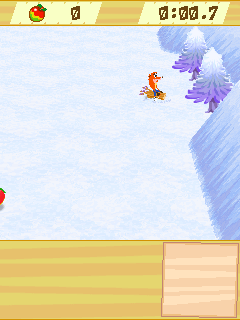

I got into Chokkan Crash hoping I could let Caddicarus play it. Getting it onto Android meant working through some very old phone expectations first. The game was waiting for a handset to be opened.CK00
Open the phone.
The first useful stall was quiet. The 0.0.3 phone run entered the game, opened its early resources and stopped making progress without throwing an exception. Inside the original loop was a question for the handset: are you open and active? The bridge answered every phone-system attribute with zero. The game kept sleeping for 50 milliseconds and asking again.CK01
There was no hinge to open on the Android phone. Giving that attribute its active value let 0.0.4 reach the Japanese safety warning and Vivendi splash. It also let the game get far enough to crash properly: index 98,296 in an array only 49,216 integers long.CK01CK04
We first made the storage bigger. That avoided the immediate overrun, but we still had the constructor wrong. Its three arguments were type, flags and primitive count; we’d been using the flags as the count. Correcting that contract in 0.0.6 changed both the backing allocation and what the game believed it had created.CK04CK05
The snow was leaking magenta.

A retained 0.0.6 desktop guest frame from the sledding minigame. The original rider, course and HUD are being rendered; this is not a physical-phone capture.
Open the image for the full original view.
CK90At that point the renderer had real models, skeletal animation and textures to draw. The snow introduced a particularly visible failure: horizontal magenta seams. Magenta lived outside the atlas’s authored snow region, and the old sampling path was reaching it beyond the actual triangle edges.CK05CK06
Deleting magenta would have hidden the symptom. The repair followed triangle coverage and the authored texture coordinates instead. That mattered elsewhere: opaque black was real content in the silhouette quiz. Fifteen retained sledding captures then showed zero leaked magenta pixels.CK06
The five minigames also refused to collapse into one sensible button layout. Sledding wanted left and right. Dance wanted exact directional chords. Hammer throw wanted repeated key-down events, so holding a button was not the same as charging. Its TAP action alternated the original rhythm keys; quiz answers kept their numbered identities.CK07
The later notes record my phone result: every minigame played, and the touch controls felt very good. My video also reached hammer landing and results. We’d withdrawn an earlier desktop claim about those results, so the later phone account needed to stand on its own.CK11
MOTION, with nobody listening.
Another report had 11,472 accelerometer samples and seven mode switches. It had zero roll-reader polls. The phone was delivering motion, and the toolbar could say MOTION, while the game continued reading keys.CK12
We found two copies of the original options: a draft and a committed setting. Our toolbar changed the draft while the game chose its reader from the committed copy. Calling the original save/commit function, then restoring the reader the game had requested, finally connected the switch to the roll and shake paths.CK12CK17
Japanese text had a similarly awkward second layer. Converting resource strings to UTF-8 made them readable, but the original wrapping code counted CP932 bytes. Two-byte Japanese characters had become three-byte characters, which the wrapper could split apart. A separate compatibility DEX made eight charset calls explicit and kept the original resources and byte-based layout rules.CK13CK14
When we moved Chokkan into the later 0.0.8 shell, I kept its custom controls and viewport. The renderer, minigame controls and the two targeted 0.0.7 repairs came forward together. We also kept a way to get a report even while the game worker was busy.CK15
About these records
The Caddicarus motivation is current owner recollection. Early physical-phone behavior is preserved in the reports and their analyses. The later all-minigame and hammer-results outcome is the checkpoint’s account of owner feedback and a recording; that recording was referenced but absent from the inspected archive. The displayed sledding image is a historical desktop guest capture. Motion/text repairs have guest-method and framework evidence; later physical sensor feel is not inferred from those tests. The executed compatibility payload after 0.0.7 contains the documented charset adaptation, so it is not described as wholly unmodified.
The receipts
Selected report lines, investigation notes and owner recollections. Open a receipt for its source and scope.
CK00 / Hoping Caddicarus could play ChokkanOwner recollection
Source: Archive-building conversation / owner-supplied recollection
Current owner motivation. This does not establish contact, a response, collaboration, or that Caddicarus played it.
you probably dont know that chokkan i got running cause i was hopoing to let caddicarus play it
CK01 / Waiting for a handset state changecheckpoint primary source
Source: 04-Chokkan_Crash_Bridge_v0.0.6_Preservation.zip / Chokkan_Crash_Bridge_v0.0.6_Preservation/docs/V004_RUNTIME_STALL_FINDING.md · selected lines 3–14
The v0.0.3 physical-device report showed startup reaching `c.Main.start()`, current frame `c.f`, resource `0` image decode, and resource `1` open, with no following exception. Static bytecode inspection of the preserved game JAR then identified a main-loop state gate in `c.f`: - the loop reads `PhoneSystem.getAttribute(2)`; - a zero value marks the frame as requiring handset-state handling; - that handling path repeatedly sleeps for 50 ms while attribute 2 remains zero; - the previous Android bridge initialized every PhoneSystem attribute to zero and had no physical fold/open event capable of changing attribute 2. Therefore the Android bridge could render the first frame and then wait indefinitely for a legacy handset state transition. v0.0.4 initializes PhoneSystem attribute 2 to nonzero (`1`), representing the permanently active/open state of a modern slab phone. This is a compatibility-host correction, not a patch to the game JAR.
CK04 / The first array repaircheckpoint primary source
Source: 04-Chokkan_Crash_Bridge_v0.0.6_Preservation.zip / Chokkan_Crash_Bridge_v0.0.6_Preservation/docs/V005_PRIMITIVE_ARRAY_FINDING.md · selected lines 3–12
Historical intermediate diagnosis, superseded by the constructor correction in CK05.
Physical-device evidence from v0.0.4 reached the Japanese safety warning and Vivendi Games Mobile splash, then terminated in `c.x.b` with: - backing array length: 49,216 integers - attempted index: 98,296 Bytecode inspection of `c.x.b(int,int,int,int)` shows Chokkan calculates texture-coordinate offsets as `(PrimitiveArray.size() - 1) * 8` and writes eight integers per logical entry. For the observed logical count of 12,288, the final entry begins at 98,296 (`12,287 * 8`). The bridge's earlier `PrimitiveArray` allocated `count * 4 + 64` integers for every backing array. With count=12,288 that is exactly 49,216, matching the physical-device exception. v0.0.5 corrects the host compatibility layer rather than patching the game: vertex/normal/color storage permits 12 integers per logical entry, and texture/point-sprite storage permits 8. The logical `size()` remains unchanged.
CK05 / Why the first repair was incompletecheckpoint primary source
Source: 04-Chokkan_Crash_Bridge_v0.0.6_Preservation.zip / Chokkan_Crash_Bridge_v0.0.6_Preservation/docs/V006_RUNTIME_FINDINGS.md · selected lines 3–15, 21–23
## PrimitiveArray ABI correction The actual constructor is `(type, flags, primitiveCount)`. The v0.0.5 host interpreted the second argument as the primitive count. Chokkan calls include `(4, 12288, 64)` and `(5, 4096, 1)`, so the earlier large allocations and size() results were wrong even after avoiding the immediate out-of-bounds access. This build interprets all three arguments correctly and supplies backing stores by the requested primitive topology. ## Rendering The former renderFigure implementation counted calls without drawing. Primitive calls drew placeholder connected lines. The new host decodes real MBAC models and MTRA skeletal animation, transforms and projects the authored geometry, decodes texture atlases, and supports textured point sprites, quads and triangles. It preserves 2D/3D ordering and publishes a completed 240x320 frame to the UI. ## Input Mappings come from original bytecode. Skydiving uses directional steering; sledding uses horizontal steering; dancing accepts directional combinations; hammer power responds to discrete key events on original STAR/POUND/0 keys; quiz answers use original1–9. Original gesture mode is selected through c.t's original setting methods on the game thread. Android accelerometer data replaces the old phone camera motion source. The guest's scene setup remains responsible for selecting roll or shake readers. The guest active scene is a loop-local variable. Its pending scene field is cleared after entry and cannot drive an overlay reliably. Scene observation therefore uses each original scene's Frame.setBackground call. Original modal menus are separately recognized so directions and confirmation remain accessible. [... selected excerpt ...] ## Completion scope A clean original-game hammer run verifies repeated tap charging, setting power, angle selection and sustained flight with advancing fruit/distance counters. An earlier claimed result-screen check could not be corroborated by the final clean run and is excluded. Landing, results and full completion remain real-device tests.
CK90 / Historical image / Chokkan Crash sledding on the original 240×320 playfieldHistorical host capture
Source: Chokkan_Crash_Bridge_v0.0.6_Preservation/evidence/v006/minigame-2.png
Reviewed original game image; no personal interface or image metadata. This is a retained desktop original-runtime capture, not a new phone screenshot.
Unchanged historical game framebuffer. Source member: Chokkan_Crash_Bridge_v0.0.6_Preservation/evidence/v006/minigame-2.png Image SHA-256: 7e2254e4104815eb07f6bba19df70b84691ecdbb207398c41615405e774fb360 A retained 0.0.6 desktop guest frame from the sledding minigame. The original rider, course and HUD are being rendered; this is not a physical-phone capture.
CK06 / The magenta snow seamscheckpoint primary source
Source: 04-Chokkan_Crash_Bridge_v0.0.6_Preservation.zip / Chokkan_Crash_Bridge_v0.0.6_Preservation/docs/SNOW_TEXTURE_SAMPLING_FIX.md · selected lines 3–8
The snow atlas contains magenta outside its authored snow region. The old affine shader path sampled outside covered triangle edges, leaking unused atlas pixels as horizontal magenta seams. Exact triangle pixel coverage and authored UV sampling remove the leakage without deleting any colors. Black opaque texels remain visible for the silhouette quiz. Before: 346–984 magenta pixels per inspected snow frame. After: 15 active sledding gameplay captures each contained zero magenta pixels; 302,302 triangles drawn; zero renderer errors. Guest steering, pause/resume, and clean shutdown also passed in the final run.
CK07 / Five minigames, five control needscheckpoint primary source
Source: 04-Chokkan_Crash_Bridge_v0.0.6_Preservation.zip / Chokkan_Crash_Bridge_v0.0.6_Preservation/docs/INPUT_MAPPING_V006.md · selected lines 7–19, 21–41, 43–59
Historical 0.0.6 control audit. The gesture description reflects its intended path; CK12 records the later discovery that draft and committed settings diverged on the phone.
| Activity / original scene | Touch input | Original evidence |
| --- | --- | --- |
| Lobby (`lby.a`) | Left/right, SELECT | `b(c.f)` tests bits 16, 18 and 20. |
| Skydiving (`par.d` / `par.f`) | Four-way steering, OK | `par.f.a(c.f)` consumes held direction bits 16–19 and lets both axes work together. |
| Hammer throw (`ham.f`) | Repeated TAP presses, OK | `c.f.f()` increases power on keydown bits 10 (`*`),11 (`#`), or 0. `ham.f.b(c.f)` reads that power and uses bit 20 for power/angle timing. TAP alternates 10/11; holding does not generate repeated presses. |
| Log sledding (`sno.d` / `sno.a`) | Left/right steering, OK | `sno.a.a(c.f)` tests held bits 16 and18. |
| Dance (`dan.e` / `dan.c`) | Directional presses and diagonal chords, OK | KEY path `dan.c.b(c.f)` reads `c.f.i() & 983040` (bits 16–19), compares the exact chord, and advances the original prompt list. No invented dance action button. |
| Silhouette quiz (`sil.a`) | BRIGHTEN, answers 1–9, OK | Static `q` is `{2,4,8,16,32,64,128,256,512}`: bits 1–9. BRIGHTEN sends bit 10, which drives the game's existing key power/brightness path. |
| Original options/dialogs | Four-way pad, OK, original soft labels | `c.f.ai == 0` signals the original modal UI. `c.f.F()` uses up/down for option rows, left/right for values, and bit 20 for confirmation. The pad replaces hammer/quiz controls while this modal UI is active. |
The lower soft keys retain original bits 21 and22. Their labels are taken from
`Frame.setSoftLabel` and translated only for known original labels. A blank
original label hides its button. This avoids presenting a guessed action.
[... selected excerpt ...]
## Motion
The TOUCH/MOTION switch requests the original global control option:
`c.t.c(2,1)` for KEY or `c.t.c(2,0)` for gesture. The request runs on the game
thread before its next keypad poll. `c.f.c(...)` starts the game's own roll or
shake reader for the current activity, rather than mapping accelerometer data
to fake keypad movement. Menu/skydiving/sled/dance use roll; hammer/quiz use shake.
The SH904i used camera motion tracking. Android supplies its accelerometer as
an adaptation of that sensing path. Recentered roll/pitch changes feed the
original `RollReader.getRollData()`; the game integrates those deltas, as its
bytecode specifies. Tilt sensitivity reaches the original ±120 range at
approximately 30 degrees from neutral. Filtered acceleration magnitude feeds
the original 0–511 `ShakeReader.getShakeData()` range. Touch pad deltas and
finite TAP pulses also feed these readers when motion mode is selected.
Recenter requests call the original `c.f.r()` on the game thread, clearing the
game's accumulated motion as well as the Android neutral point. Sensors stop
on pause. On resume, their first fresh gravity sample establishes a new neutral
before physical tilt contributes, preventing a phone moved in the background
from becoming an unintended steering command.
[... selected excerpt ...]
## Scene detection and interaction
The original game stores its active scene in a local variable; `c.f.p` is only
a pending transition and is cleared at entry. Each actual scene's entry calls
`Frame.setBackground`. That call's original stack identifies its class, and
`ControlProfile` reads its singleton for stage-specific labels. The exact FSM
fields are `par.d.p`, `ham.f.s`, `sno.d.o`, `dan.e.o`, and `sil.a.n`.
The viewport always preserves the complete 240×320 original surface. Controls
are below it, honor display insets, capture multiple fingers independently,
show pressed state, and release on cancel, focus loss, pause, or profile change.
Hardware directions/confirm are supported; X/Y map original `*`/`#` rhythm keys,
Start maps original softkey 1, and B maps original softkey 2. Digits map directly.
Desktop execution of the unchanged payload verifies these key/gesture paths.
Physical accelerometer feel and all five complete minigames still require
Android device testing. The report records scene, FSM stage, control mode,CK11 / Later phone outcome: every minigame playscheckpoint primary source
Source: Chokkan_Crash_Bridge_v0.0.8_PRIVATE_CHECKPOINT.zip / Chokkan_Crash_Bridge_v0.0.8_PRIVATE/docs/V007_RUNTIME_FINDINGS.md · selected lines 3–7
The checkpoint records owner feedback and describes a named phone recording. That source recording is not included in the inspected archive.
## Phone evidence from v0.0.6 Wakka reported that every minigame plays and touch controls feel very good. The attached recording `Screen_Recording_20261011_002551.mp4` shows skydiving, hammer throw and menus, with hammer results around 00:41 (TOTAL54, distance27m). This adds real-phone hammer landing/results evidence; the previously withdrawn desktop landing claim remains withdrawn. The attached report `Chokkan-Crash-Bridge-v0.0.6-game-report.txt` records 11,472 sensor samples, seven mode switches and zero roll polls. Rendering and audio failures are zero. Neutral pending at report export reflects the activity/file-picker pause and is not the primary input fault.
CK12 / Motion samples arrived; the game never read themcheckpoint primary source
Source: Chokkan_Crash_Bridge_v0.0.8_PRIVATE_CHECKPOINT.zip / Chokkan_Crash_Bridge_v0.0.8_PRIVATE/docs/MOTION_V007_FIX.md · selected lines 3–24, 26–32
The physical v0.0.6 report contains 11,472 accelerometer samples and seven mode changes, but zero RollReader polls. The host received phone motion; the original guest remained in its key-reader fallback. ## Cause The original settings have a draft and a committed copy: | Original API | Meaning | | --- | --- | | `c.t.l(2)` | Read draft control setting, used by the options display and some minigame logic. | | `c.t.c(2, value)` | Write draft control setting. `0` is gesture, `1` is KEY. | | `c.t.m(2)` | Read committed control setting, consulted by `c.f.c(int)` when selecting a reader. | | `c.t.c()` | Original save/commit function, copying draft settings into the committed settings. | v0.0.6 wrote and reported the draft setting without calling the original commit function. When the toolbar requested gesture mode, `c.f.c` still saw committed KEY mode and selected active reader `1`. The toolbar therefore said MOTION while the guest never called RollReader or ShakeReader. ## Repair The Android toolbar writes the original setting, invokes the original save/commit function, and replays `c.f.z`, the original game's current reader request. That field retains the requested reader even when KEY mode falls back to reader `1`. This preserves the original requests for roll (`2`), shake (`3`), and the forced-gesture flag (`16`) used by motion practice, rather than selecting a reader from an overlay guess. The mode display now follows committed `c.t.m(2)`. Reports include original requested and active reader values, RollReader poll count, ShakeReader poll count, and last sampled shake strength. The original save format and 4,096-byte scratchpad remain intact. The original commit function also commits any other draft options, matching the game's own options-close behavior. The report's `Sensor neutral pending=true` occurred while the activity was paused for saving the report. `Paused: true`, PhoneSystem attribute 2 = 0, and the game thread waiting in `Host.awaitActive` corroborate that state. It is separate from the mode-commit defect. [... selected excerpt ...] ## Verification `MotionIntegrationProbe` executes the charset-compatible derivative of the original guest JAR against production bridge classes and Android API doubles. It feeds accelerometer events into `ChokkanInput`, lets the actual guest game loop poll its readers, and observes original guest fields. It does not invoke RollReader directly or supply steering/charge keys during the motion checks. All five cases prove committed gesture mode, correct original active reader, sensor ingestion, persisted setting byte, and return to committed KEY mode. Skydiving, sledding, and dance prove signed left/right/forward tilt values through the original guest integration. Sledding additionally proves a change in the original player's world position. Hammer proves charge power from sensor shake; quiz proves the original reveal-strength field responds to sensor shake. The three roll cases also verify that a fresh sample after suspension becomes neutral without retaining earlier tilt. A separate original `c.t.b()` load regression reproduces the draft/committed mismatch, reloads both saved modes, and verifies other options and a saved score survive the original commit. See `tests/runtime/motion-*-verified.txt` and `motion-settings-verified.txt` for exact passing output. This validates the repaired dispatch and guest behavior; physical phone response still needs the next APK test.
CK17 / Draft versus committed setting reproducedcheckpoint primary source
Source: Chokkan_Crash_Bridge_v0.0.8_PRIVATE_CHECKPOINT.zip / Chokkan_Crash_Bridge_v0.0.8_PRIVATE/evidence/v008/MotionSettingPersistenceProbe.txt · selected lines 1–5
ChokkanBridge SAVE: Initialized KEY-mode scratchpad: 4096 bytes ChokkanBridge BOOT: Chokkan Crash host ready: 240x320, SH904i / DoJa 5.0, preserved game settings, CP932 guest text DRAFT_COMMITTED_REPRO_PASS draft=0 committed=1 MOTION_STARTUP_PERSISTENCE_PASS draft=0 committed=0 persisted=0 otherOptionsPreserved=true scorePreserved=true KEY_STARTUP_PERSISTENCE_PASS draft=1 committed=1 persisted=1 scorePreserved=true
CK13 / Why decoded Japanese still broke its own wrappingcheckpoint primary source
Source: Chokkan_Crash_Bridge_v0.0.8_PRIVATE_CHECKPOINT.zip / Chokkan_Crash_Bridge_v0.0.8_PRIVATE/docs/V007_RUNTIME_FINDINGS.md · selected lines 15–27
## Japanese text Video 00:00: lobby descriptions overflow the cream bubble. Video 00:26: `ロビーに戻りますか？` has a replacement character and choices below the cyan panel. Video 00:41: `もう一度、トライしますか？` is split into corrupted extra lines. Original `c.j.a(String)` uses default-encoded bytes and fixed byte widths. The original CP932 encoding uses two-byte Japanese characters; Android UTF-8 uses three. Resource-only UTF-8 conversion allowed strings to decode, but subsequent byte wrapping split UTF-8 characters and made extra lines. Drawing-time replacement or Unicode width normalization cannot recover that layout correctly. A reproducible build step translates eight default-charset String calls in five guest classes to explicit `windows-31j`. It changes only String encoding overloads. All 55 other classes and all resource entry bytes are copied exactly. The original JAR and DEX remain exact preserved assets; the loader runs a separate compatibility DEX. `Host.openJarResource` returns raw resource bytes, avoiding expanded tables overflowing the guest's fixed4,561-byte input buffer. `tools/TranslateGuest.java` and the included compatibility manifest document each translated call. The original byte-based line widths, halfwidth characters, ASCII control markers and bitmap-font indices are retained. The return/retry panels should contain two lines; the skydiving lobby description should contain five lines instead of seven. No font size or guest coordinates are changed. ## Verification scope Current test outputs are retained under `tests/text`, `tests/input` and `tests/runtime`. These execute the guest methods with Java/Android doubles; they do not substitute for testing the new tilt/shake feel on the S25 Ultra. The established renderer and audio implementations are unchanged. Full completion remains unverified.
CK14 / The original byte wrapper reproduces and repairs the overflowcheckpoint primary source
Source: Chokkan_Crash_Bridge_v0.0.8_PRIVATE_CHECKPOINT.zip / Chokkan_Crash_Bridge_v0.0.8_PRIVATE/tests/text/README.md · selected lines 8–20
This test executes the actual guest `c.t` decoder, `c.j` byte wrapper, `c.e` bitmap glyph mapper and `c.l` pager. Its text corpus oracle is independently decoded from the original resources by Python's strict CP932 decoder. The untranslated JAR reproduces the phone video's seven-line lobby description and three-line dialogs with replacement glyphs. The separate compatibility JAR must produce five lobby lines and two dialog lines, preserve all 340 strings in six resource tables, leave resource bytes unchanged, and retain ASCII glyph indices and `$P` pager behavior. These are structural checks against real guest methods. The Java graphics doubles do not reproduce Android Japanese font rasterization, so the test does not certify physical handset text appearance or claim screenshots of that output.
CK15 / The later shell preserved custom Chokkan controlscheckpoint primary source
Source: Chokkan_Crash_Bridge_v0.0.8_PRIVATE_CHECKPOINT.zip / Chokkan_Crash_Bridge_v0.0.8_PRIVATE/README.md · selected lines 5–21, 23–32
This normalization uses v0.0.7 as its base. The supplied project checkpoint was v0.0.6; the later private checkpoint was found while locating the original signing key. v0.0.7's motion-setting commit/reader restoration and CP932 Japanese text fixes are preserved. ## What changed - Launcher icon, title, DoJa platform label and a visible SAVE REPORT button fit the original 44dp header allocation. - SAVE REPORT writes directly to `Downloads/Chokkan_Crash_Bridge/` using the actual UI kit v1.1.2 exporter. It does not open a file picker, release gameplay holds, pause the game or require the game worker to answer. - Reports contain a dated published runtime snapshot, fresh worker state/stack, live counters and recent persistent log tails. Snapshot age and unavailable state are explicit. - Fault capture is installed before gameplay View construction; faults retain local evidence and attempt independent export. - Android system Back and Close game run real input/audio/game cleanup, finish the Activity and return to the caller, including Omni Player. ## Preserved gameplay All existing control positions, sizes, labels, input mappings, pad sliding/diagonal behavior, multi-touch aggregation, hammer TAP behavior, quiz answers/BRIGHTEN and original softkeys remain intact. TOUCH/MOTION keeps its original visible position, mode requests, tilt/shake sensitivity, recentering and sensor lifecycle. The game viewport retains the exact existing position, dimensions, native 240x320 proportions and per-profile scaling formulas. Chokkan's original custom canvas remains responsible for its layout. The shared viewport/control planners are not substituted. Original `game.jar`, `game.dex`, `initial.sp`, v0.0.7 `game-compat.dex` and its charset manifest are byte-identical to the v0.0.7 APK. Renderer/audio implementations and `ChokkanInput.java`/`ControlProfile.java` are unchanged. The accelerometer remains an adaptation of the original SH904i camera gesture readers. [... selected excerpt ...] ## Verification - Android API35 compile, min-API28 D8, APK alignment/signature/package checks. - Original signing certificate matches v0.0.7 and the preserved owner key. - Eight Android API34 framework tests with native graphics pass, including 180 exact baseline geometry comparisons across nine profiles, five phone/tablet sizes, two densities and two font scales; real MotionEvent multi-touch; input cancellation/lifecycle; cold construction; startup faults; report success/failure and exports while a worker fixture holds the screen lock. - All five motion integration probes execute the preserved game's actual Java bytecode with desktop Android/media/sensor doubles. Original roll/shake ingestion, hammer power, sled steering, quiz reveal and KEY restoration pass. - Sensor mapping, original setting/score persistence and 1,165 CP932 text assertions pass. - Kit v1.1.2's complete host and twelve Android framework checks pass against the embedded JAR. See `evidence/v008/` and `docs/BUILD_VALIDATION.txt`. Framework layout previews use a retained original guest title frame as a fixture; they are not a new gameplay recording. No physical-handset verification of this APK is claimed. Actual sensor feel, audio playback, live Downloads visibility and full minigame completion remain handset checks.